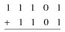
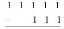
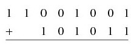
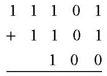
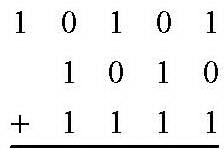
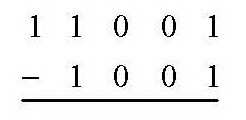
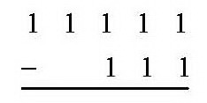

Electrónica digital
6.3. Operaciones con números binarios.
Ejercicio 10
Efectúa la suma binaria de los números del ejercicio 8, agrupados de dos en dos.
Ejercicio 11
Efectúa las siguientes operaciones en binario:
|  |
 |  |
Ejercicio 12
Efectúa las siguientes sumas en binario:
|  |  |
Ejercicio 13
Convierte los siguientes
números a binario y súmalos después: a) 135, 215; b) 10000, 100100; c) 255,
256; d) 103.256, 20.130
Ejercicio 14
Efectúa las siguientes diferencias en binario:
|  |
 | |
 |
||
Ejercicio 15
Convierte los siguientes números a binario y efectúa la resta de ambos: a) 2300 y 349; b) 18 y 17; c) 45098 y 23421; d) 1506 y 1420.
Actividad 16
Busca en bibliografía especializada en electrónica digital las siguientes cuestiones:
a) ¿Cómo se indica la coma decimal en binario?
b) ¿Cómo se indica el signo menos para expresar que un número es negativo?
Obra publicada con Licencia Creative Commons Reconocimiento No comercial Compartir igual 4.0